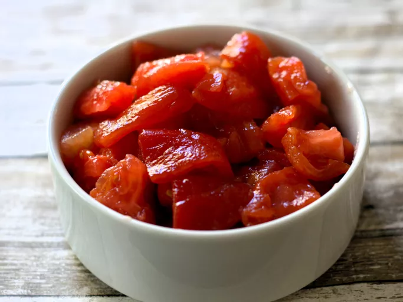

World's Finest Tomato Concasse

Let's Get It!!
The technique is relatively quick and easy; it will allow you enjoy those gorgeous summer tomatoes sans skin and seeds.
Ingredients
How to make Tomato Concasse Step-by-Step
- Fill a large bowl with ice cubes and water and set aside.
- Bring a large pot of water to a boil.
- Cut an X in the bottom of each tomato with a knife.
- Place prepared tomatoes in the pot of boiling water and cook until the skins begin to peel off, 10 to 40 seconds.
- Transfer tomatoes to the bowl of ice water and allow to cool for 2 to 3 minutes.
When cool enough to handle, peel the skin off each tomato.
- Cut each tomato in half crosswise and remove and discard the seeds; finely dice the flesh.
Other Helpful Links